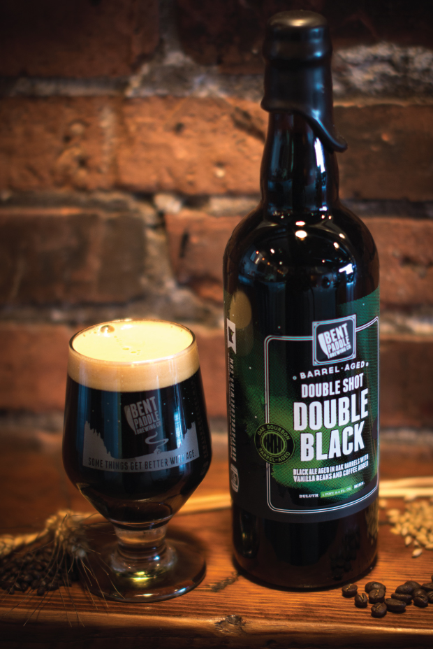

HOME
IPAs
Double Shot Double Black IPA
Bent Paddle Brewing Co.
This robust version of their black ale features a smooth, chocolatey, semi-roasted malt profile that sweetly balances out the doubled strength. Notes of oak and whiskey from an extended aging period in Bourbon barrels creates a welcoming warmth. This iteration of Bent Paddle's Double Black Ale features a "Double Shot" of both Cold-Press coffee and whole bean Vanilla for an extra level of flavor complexity and is the perfect companion for a late night viewing of the Northern Lights ... or can accompany any natural wonder you may come across.
Bent Paddle Brewing Co. is a 30-barrel production craft brewery and taproom located in the beautiful northern Great Lakes port town of Duluth, Minnesota. The brewers of Bent Paddle Brewing Co. use the amazing water of Lake Superior to brew the freshest and most dependable craft beer possible.
Check out their site HERE 